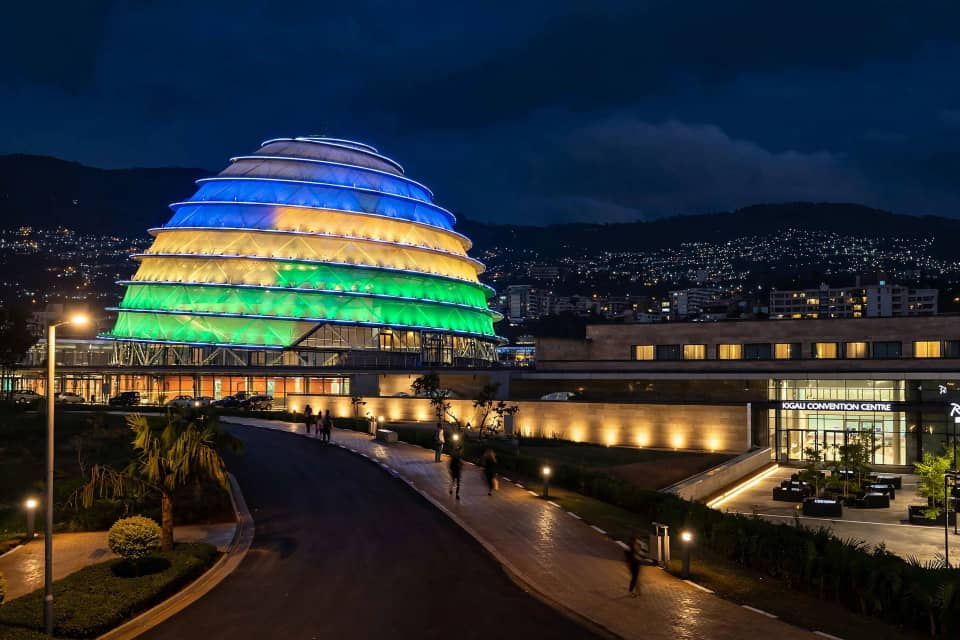
Your curated guide to the best of Rwandan restaurants, culture, nature, events, and services, all in one place.
Start Exploring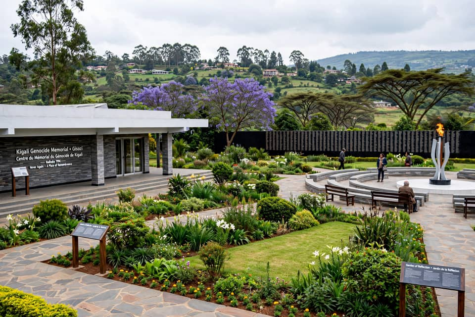
The most important memorial in Rwanda. Built in Gisozi, 10 mins from city centre, it commemorates the 1994 Genocide Against the Tutsi. Over 250,000 victims are interred here in mass graves. Visitor centre has three permanent exhibitions on history leading up to genocide, managed by Aegis Trust and Kigali City Council. A place of remembrance and learning, photography inside is prohibited.
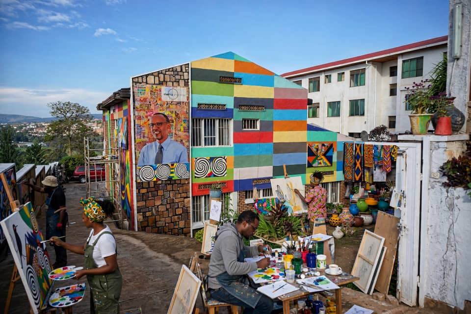
Founded in 2012 by brothers Emmanuel Nkuranga and Innocent Nkurunziza, Kigali's leading contemporary art hub. Provides space for 10 artists-in-residence, gallery, and weekly traditional dance classes. Vibrant murals outside, paintings, sculptures inside, mission is to spur creativity for social and economic growth.
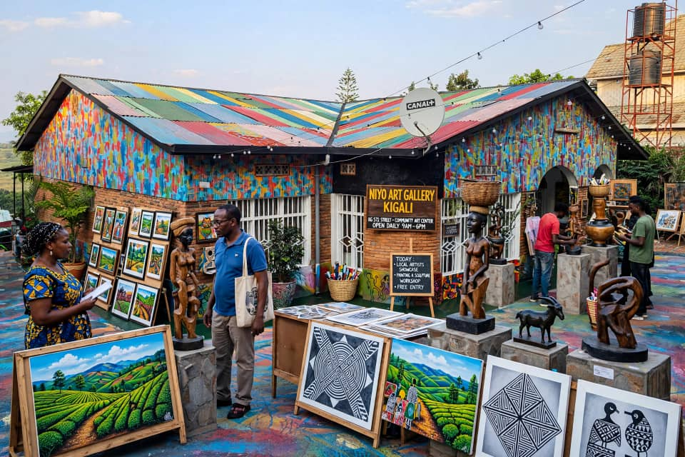
Community-based gallery teaching traditional dancing, drumming, and performance to disadvantaged children and street kids. Hosts 17 artists-in-residence from Great Lakes region. Collection of paintings, sculptures, crafts, with workshop space.
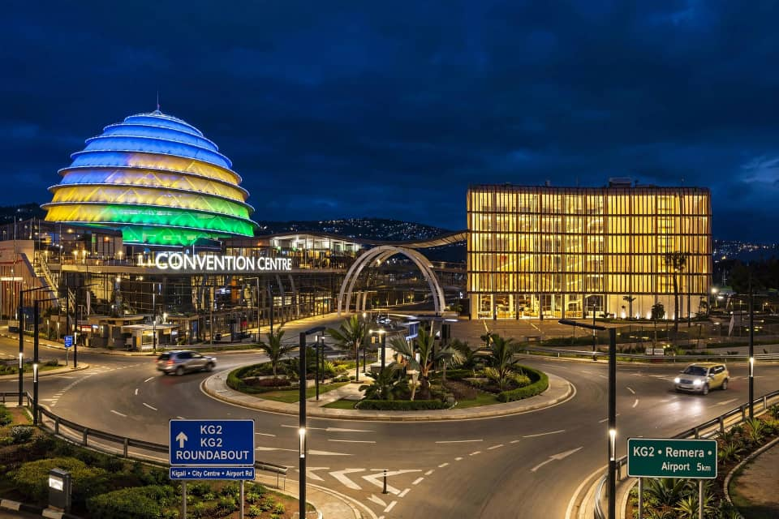
Iconic domed landmark on KG2 Roundabout, next to Radisson Blu. Africa's Leading Conference Centre (World Travel Awards 2017). 2,600 seat auditorium, shaped like traditional Rwandan palace, lights up at night in national colors. Business hub of Kigali.
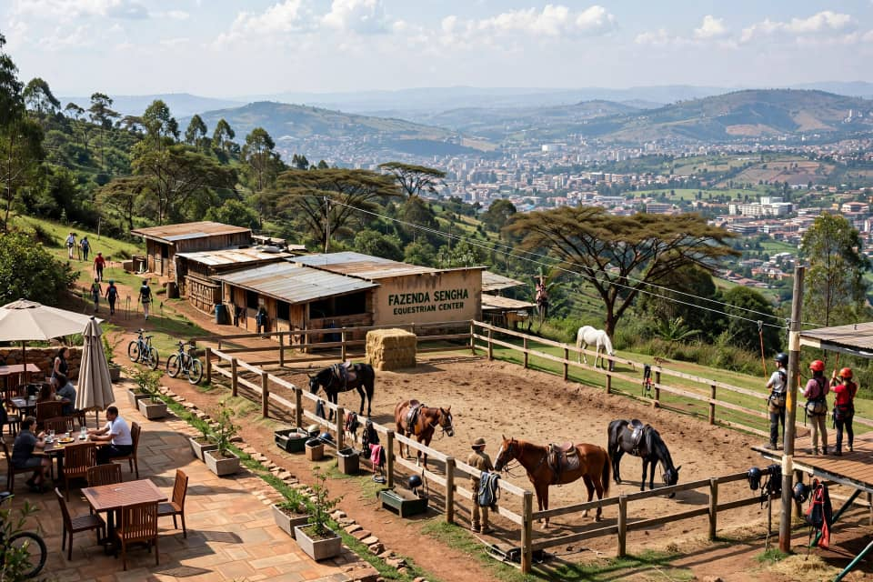
Equestrian and outdoor adventure park atop Mount Kigali in Nyamirambo. Horseback riding, trail rides, zip lines, archery, mountain biking, quad bikes. Panoramic views over Kigali city. Great for half-day getaway with café on site.
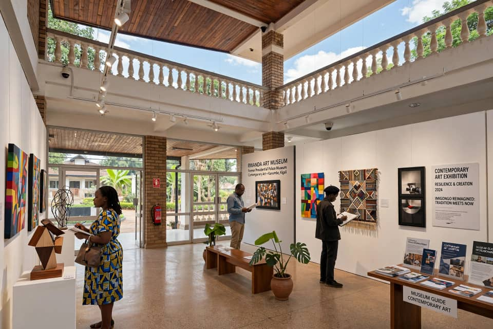
Founded in 2009 in the former residence of President Juvénal Habyarimana (until 1994). Located 4km east of Kigali International Airport in Kanombe, Nyarugunga, Kicukiro. Now holds contemporary Rwandan and African art, plus exhibits on Rwandan history. Includes kids' art room.
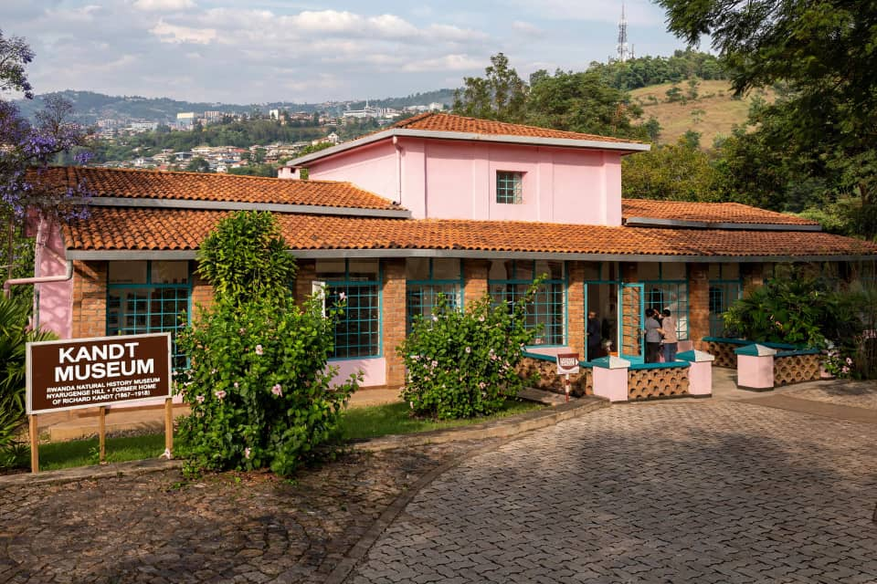
Former home of German explorer and first colonial governor Richard Kandt (1907) on Nyarugenge Hill. Now Natural History Museum under Institute of National Museums of Rwanda. Shows evolution of life, flora/fauna of Nyungwe, Akagera, Volcanoes parks, geology of Rwanda, German-Rwanda shared history and live snakes exhibit. Best panoramic view of Mt Kigali, Mt Jali, Mt Shyorongi.
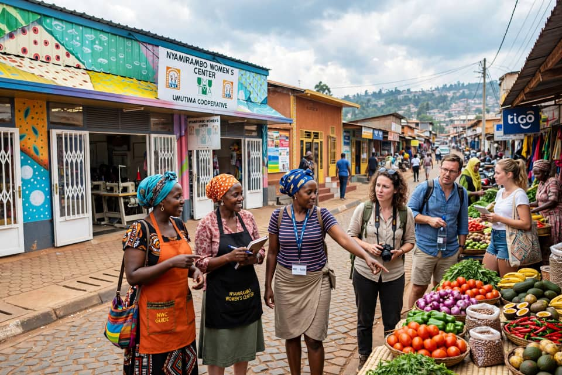
Cultural walking tour run by Nyamirambo Women's Center (NWC). Takes you through Kigali's most vibrant, multicultural neighborhood — local markets, homesteads, hair salons, mosques, tailors. You get to try local snacks, learn about women's empowerment projects. Book in advance.
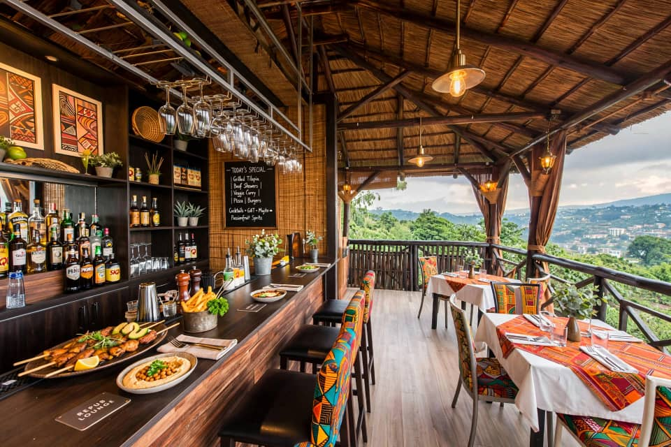
Good food, good people, good times — that's their motto. Trendy pub / restaurant / bar in Kimihurura popular for burgers, grills, cocktails and events. Hosts corporate gatherings, pop-ups, live art.
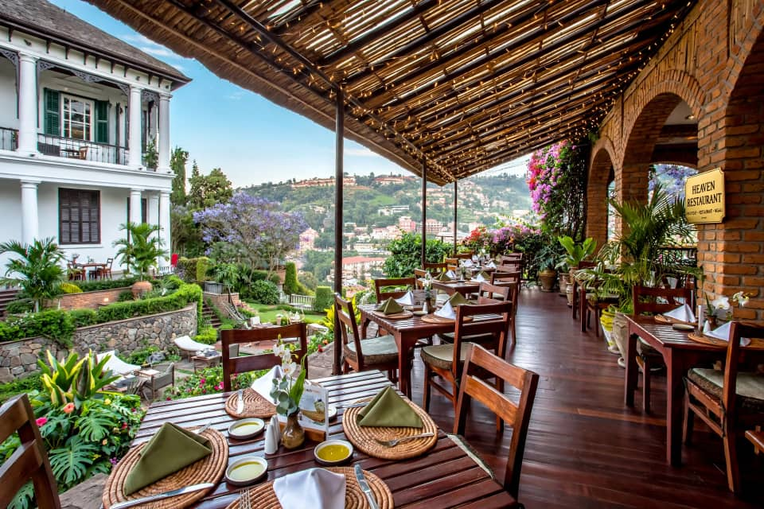
More than a restaurant & boutique hotel — it's a social enterprise investing in training Rwandans to be leaders in hospitality. American-owned, opened 2008 in Kiyovu, consistently ranked top in Rwanda. International fusion with local ingredients, great for romantic / business dinners.
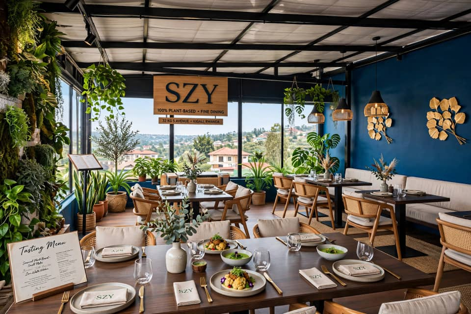
Kigali's FIRST 100% plant-based fine dining restaurant. Described as a sensory vegan odyssey, multifunctional venue offering innovative high-end comfort food — miniburgers, pasta, desserts. Opened early 2026.
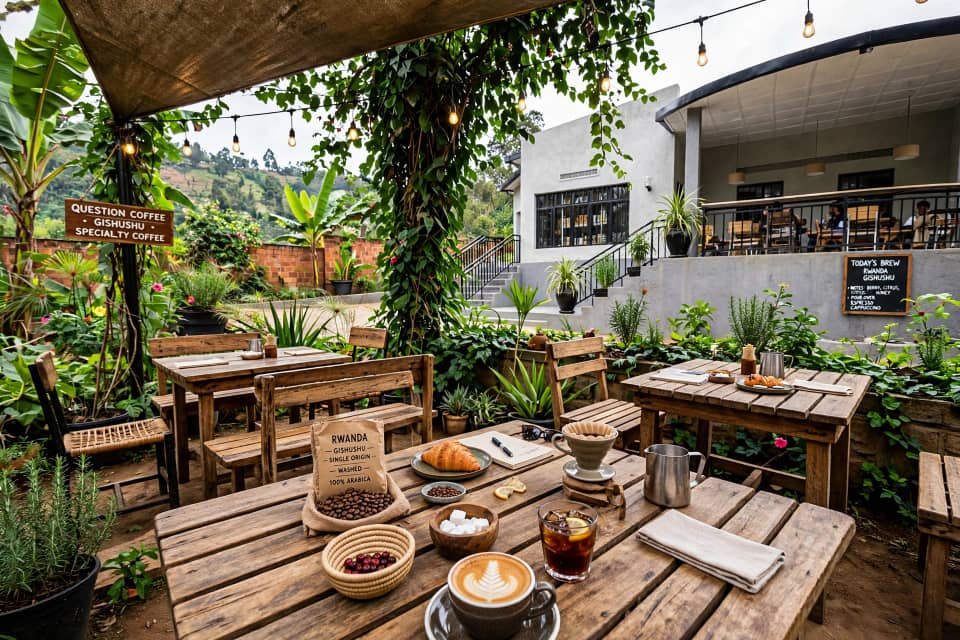
Social enterprise café and training center. They serve locally-roasted Rwandan specialty coffee grown by women farmers. All proceeds are reinvested into trainings for coffee farmers. Spacious garden, very relaxed, also offers brewing classes and latte art workshops. Rated one of the best cafes in Kigali.
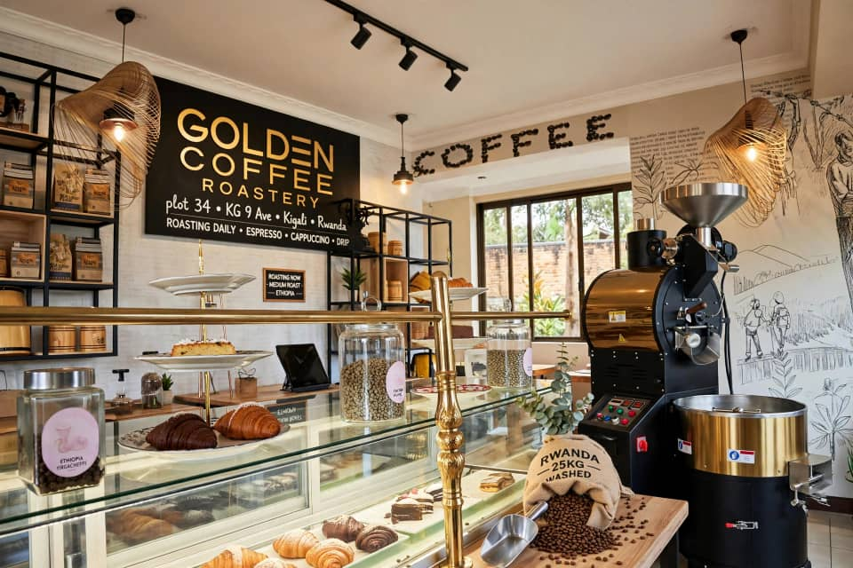
Specialty coffee roastery and cafe in Nyarutarama area. Focus on sourcing, roasting and brewing Rwanda's finest at origin. Serves espresso, iced latte, waffles, burgers, cakes. Also venue for craft experiences.
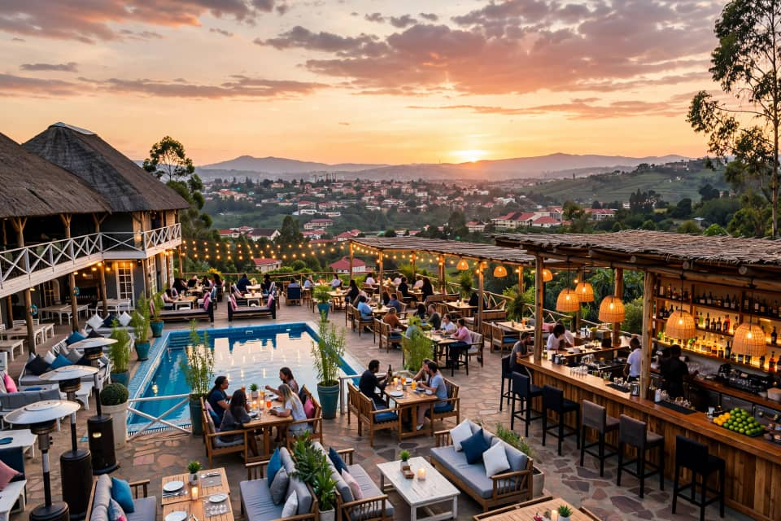
Kigali institution. Vast outdoor seating, huge bar, first-floor restaurant with a view, best big-screen for live sport. Lounge music, sunset views over Kigali, divine cocktails, pizza and bistro food. Stays open late for DJs.
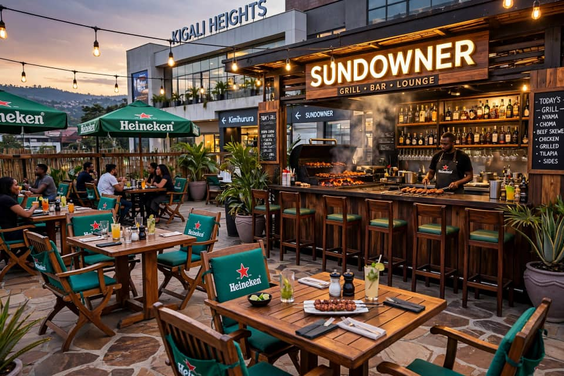
Charming grill / resto-pub at Kigali Heights complex in Kimihurura. Known for mixed grills, burgers and late-night vibe. Listed as bar, bar grill and restaurant.
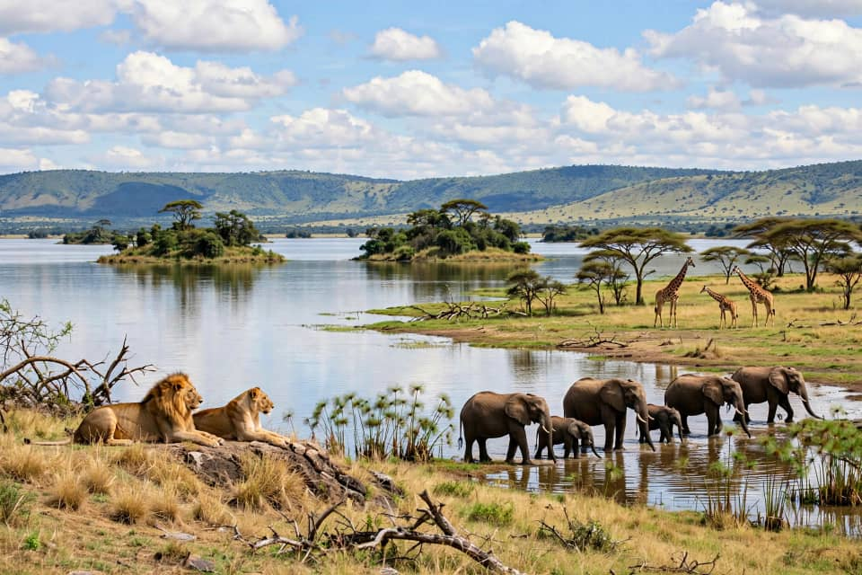
Rwanda's only big 5 savanna park (1,122 km²) in Eastern Province, border Tanzania. Managed by African Parks since 2010. Restored with lions and rhinos reintroduced. Game drives, boat safari on Lake Ihema, birding (500 species). Just 2 hours from Kigali.
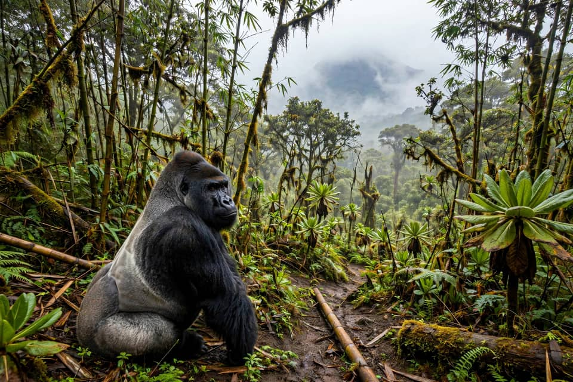
The most famous park in Rwanda — part of Virunga Massif in Musanze, home to endangered mountain gorillas and golden monkeys. 160km², 5 volcanoes (Karisimbi, Bisoke etc). Gorilla trekking permit $1500, one hour with gorillas. Also Dian Fossey tomb hike.
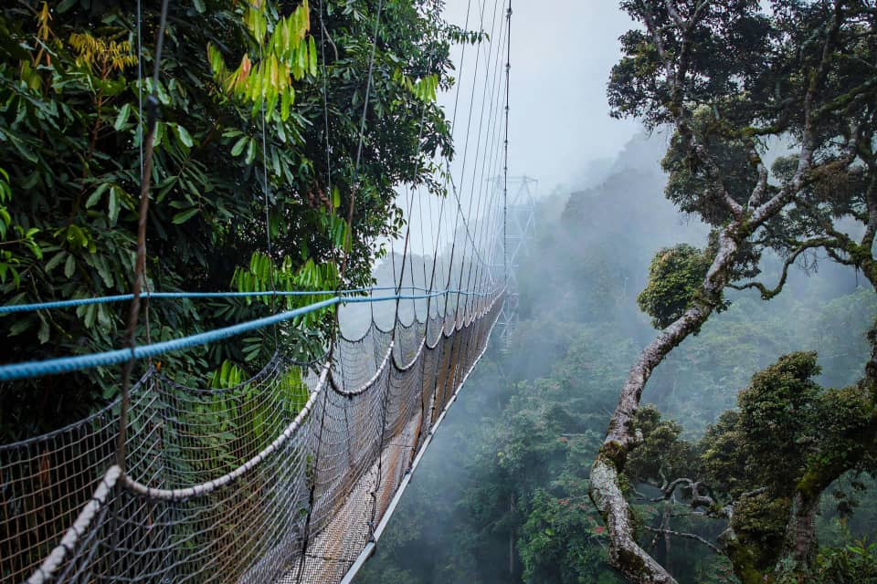
Largest montane rainforest in Africa (1,019 km²) in SW Rwanda bordering Burundi. Famous for Canopy Walk — 160m suspension bridge 70m above forest — chimpanzee tracking, 13 primate species, 300+ birds, waterfalls. Best biodiversity in Rwanda.
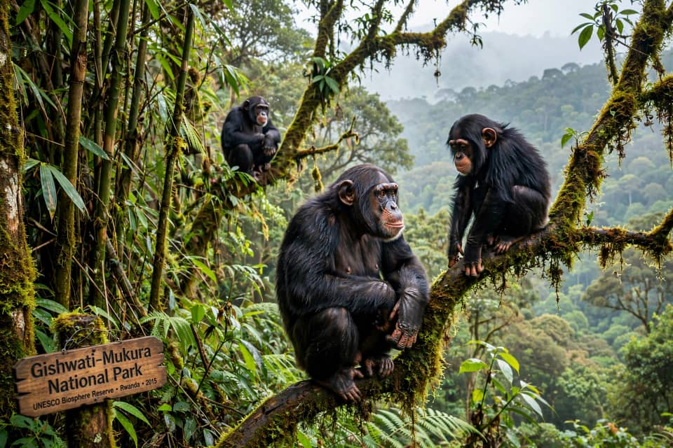
Rwanda's 4th National Park (created 2015 when two forests were joined). UNESCO Biosphere Reserve in Western Province. Home to chimpanzees, golden monkeys, 232 birds, and biodiversity corridor between Nyungwe and Volcanoes. Off-the-beaten-path, for primate tracking and conservation tourism.
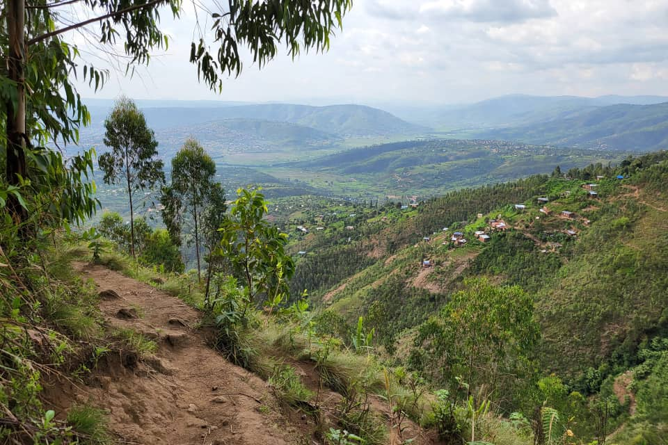
Not a true mountain but Kigali's highest hill (1,853m) on the west side of town. A straight-forward hike from Nyamirambo up through local homes, galleries, Fazenda Sengha, bush sections and zipline spot at the summit. Best free sunrise/sunset viewpoint over the whole city.
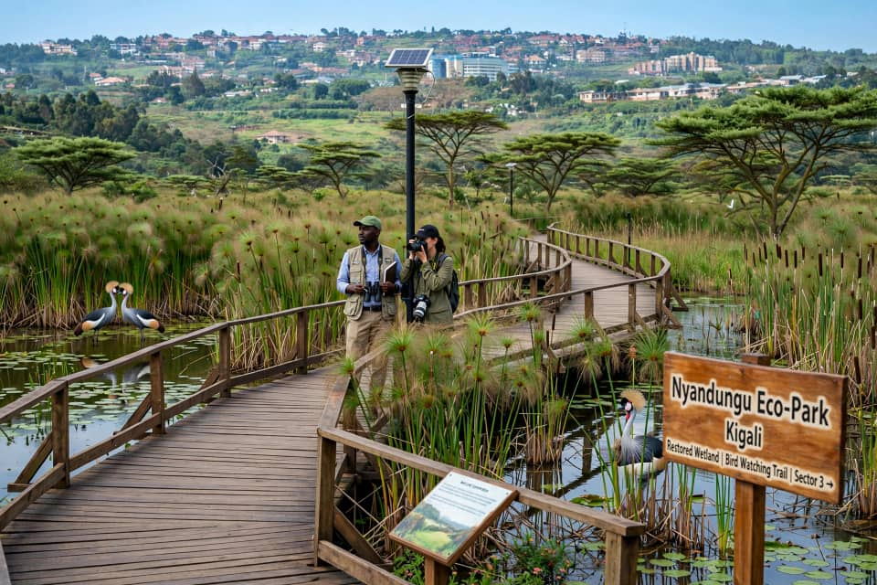
Kigali's newest eco-park — 121 hectares of restored urban wetland in Gasabo/Kicukiro. Boardwalks, birding hides (70+ bird species), bike trails, medicinal garden, picnic lawns, restaurant. Perfect for running, family walks. One of the most rated parks in Rwanda.
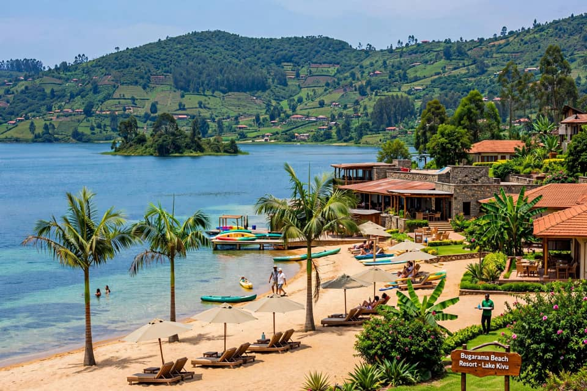
Second best beach town on Lake Kivu, between Gisenyi and Cyangugu, 135km west of Kigali. Small sandy & pebble public beaches where locals swim, known as beach resort with sunset views, kayaks, and access to Napoleon Island and Nyungwe nearby.
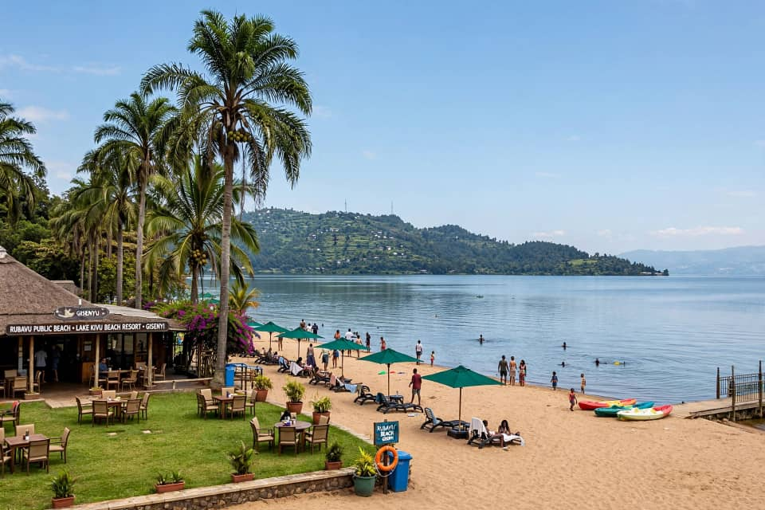
Rwanda's most famous sandy beach on Lake Kivu's NW shore. Palm-shaded, swimming, kayaking, boat to Napoleon Island. One of Great African Lakes, safe to swim (no hippos/crocs in this part). Many resorts.
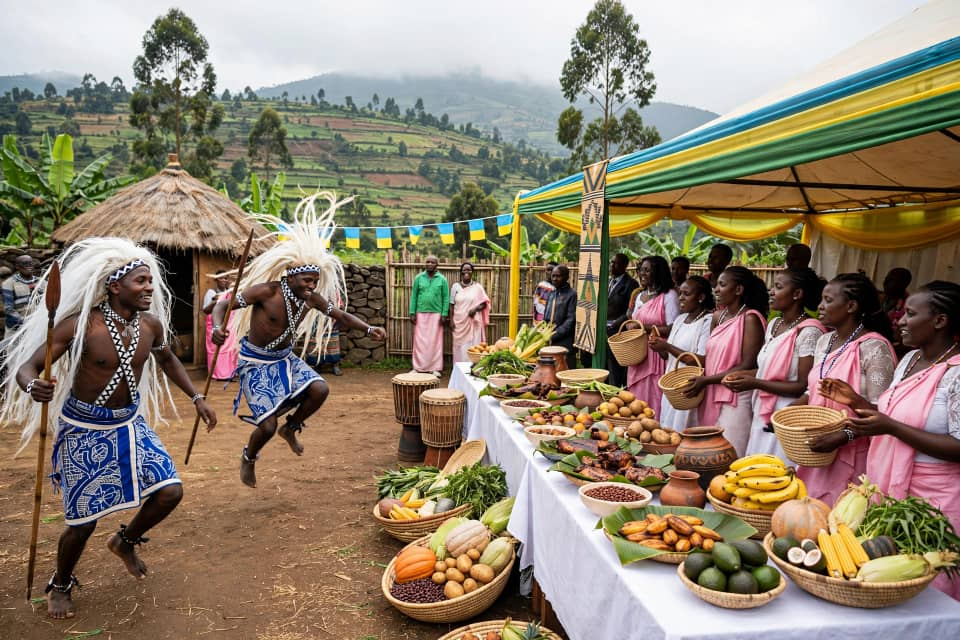
1,000-year-old harvest thanksgiving, now a public holiday on first Friday of August. Government through Rwanda Academy of Language and Culture organizes week-long arts festivals — traditional Intore dance, exhibitions of crafts, painting, film & music, conferences. Symbolizes gratitude and sharing harvest.
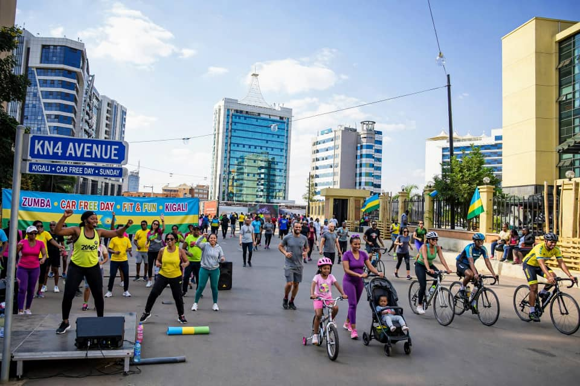
Kigali's famous bi-monthly health day. City closes KN4 Avenue / KG 9 Ave between City Hall, Makuza Plaza, Bank of Kigali to cars from 7am-11am. Free Zumba, aerobics, yoga, cycling, medical checkups. President Kagame often joins. Held twice a month — 1st and 3rd Sunday of each month.
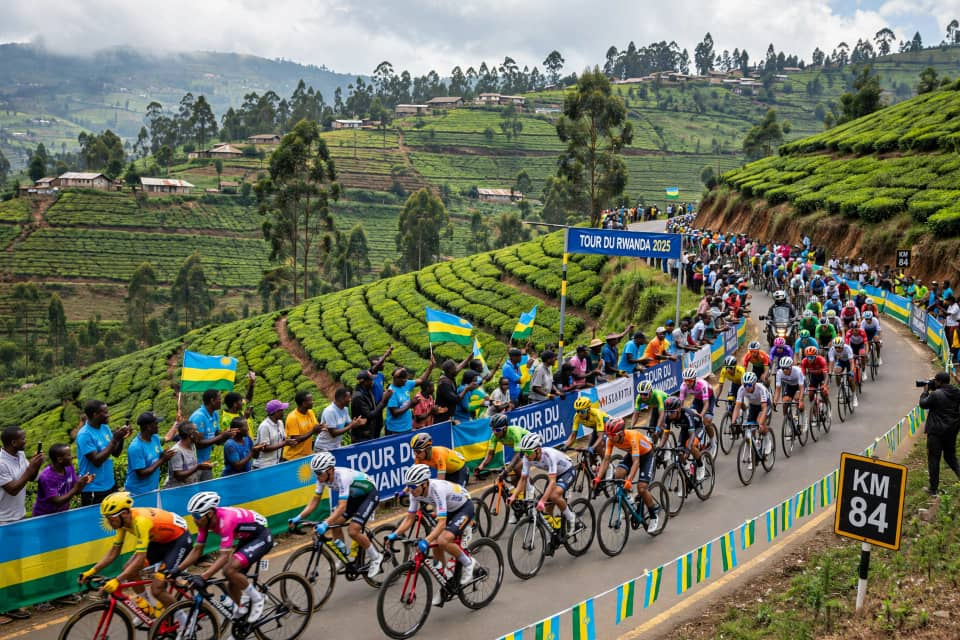
Africa's biggest cycling race, UCI 2.1, 8 stages across Land of Thousand Hills. 18th edition in 2026 covered Rukomo → Rwamagana → Nyamata → Huye → Rusizi → Karongi → Rubavu → Musanze → Kigali (22 Feb - 1 March 2026). Climbs, elevation 2,190m, international pro teams.
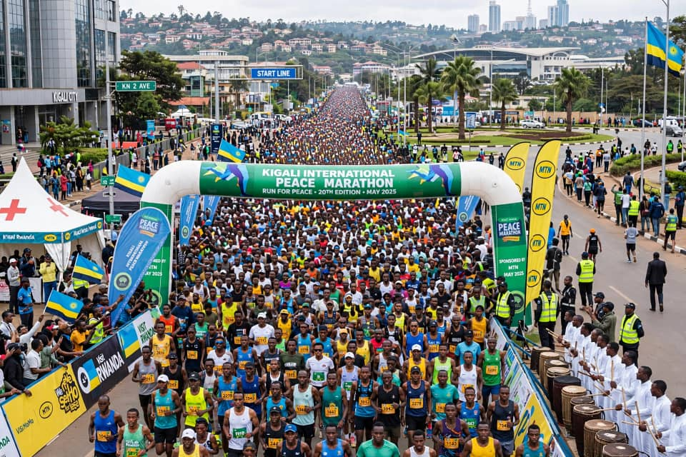
Africa's respected road race, now 21st edition. For first time in 2026 expanded to 2-day format June 13-14. 10km Run for Peace, Half Marathon, Full Marathon. Thousands of international runners, course records broken in 2026. Celebrates peace, unity, healthy living.
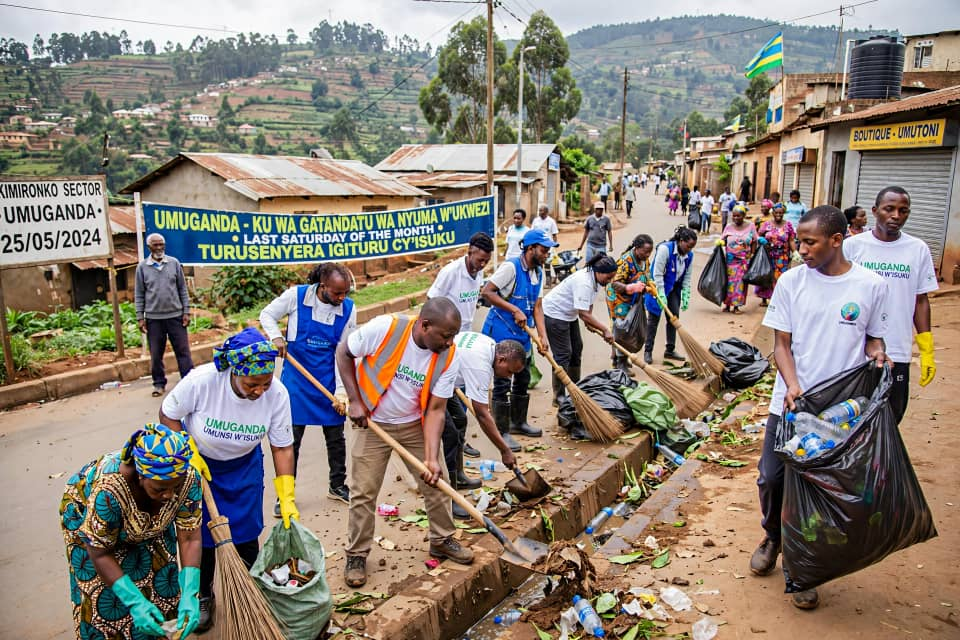
Rwanda's monthly national community work day — a home-grown solution. Every last Saturday of the month 08:00-11:00, everyone cleans streets, plants trees, builds. Businesses closed until 11am, traffic restricted. Embodies unity and cleanliness.
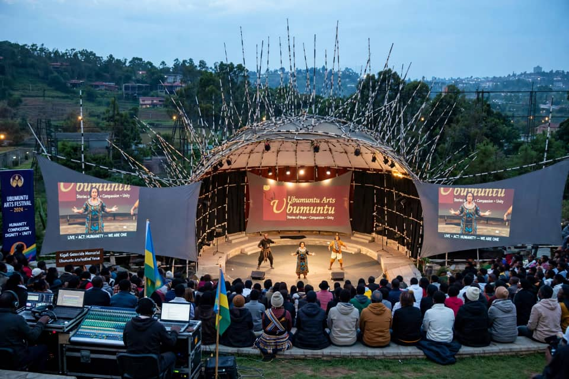
Created 2015 by Hope Azeda (Mashirika Performing Arts), held at the Amphitheatre of Kigali Genocide Memorial. Theme: “I am because you are”. Theatre, dance, music, truth & resilience from 13+ countries. Free workshops, Ikaze Night welcome. Most emotional festival in Rwanda.
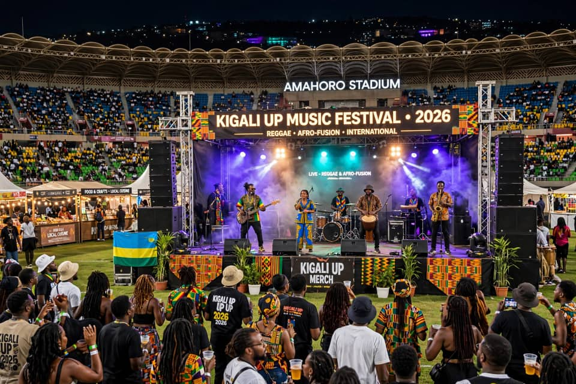
Since 2011, Rwanda's biggest international music festival. Afro-fusion, reggae, hip-hop, blues. 30+ musicians from East Africa, France, Canada, plus lessons. Held at Amahoro Stadium parking lot / IPRC Kicukiro Cricket Grounds / Kigali Heights. Special editions with Nyundo Music School students.
Since 2013, much-loved cultural fixture focused on Rwandan culture. Two-day fest in September at Serena Hotel / Petit Stade / Kigali Cultural Village. Local traditional folk musicians (Mariya Yohana, Muyango, Inganzo Ngali), dance, local art, artisan market, food tasting. Real slice of Rwandan creativity.
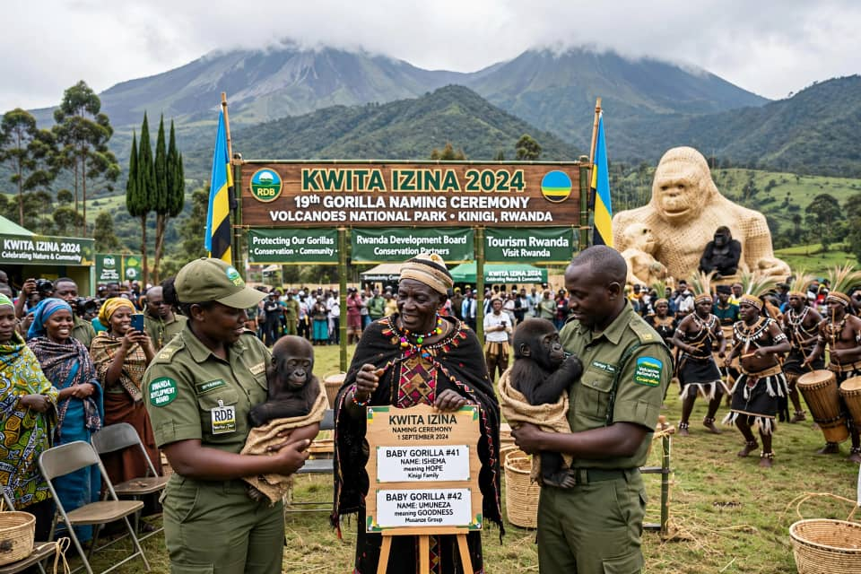
Rwanda's flagship conservation event. Since 2005, names nearly 400 baby gorillas. 40 babies named in 2025 (20th edition). Global leaders, football legends, artists become namers. Celebrates community-centered conservation and gorilla population growth from 880 (2012) to 1060+ now.
Kwibuka (Remember) is Rwanda's most significant national period — 100 days of commemoration April 7-July 4 for Genocide Against Tutsi. National ceremony at Kigali Genocide Memorial hosts world leaders. Also hosts Rwanda Film Festival (Hillywood) — Africa's premier film fest in Kigali.
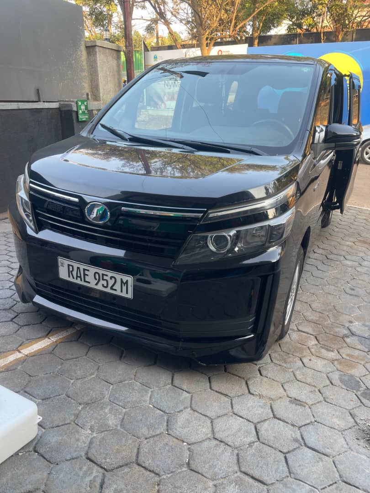
We make getting around Rwanda easy and comfortable! We offer: ✓ Airport Pickup & Drop-off (Kigali International Airport) ✓ Full-Day Car Hire with Driver ✓ Half-Day & Hourly Hire ✓ City Tours & Inter-city Transfers ✓ Gorillas, Akagera & Lake Kivu Trips ✓ Clean, Comfortable & Well-Maintained Cars Safe, Reliable, Affordable — Available 24/7
Explore Rwanda with a Local Expert! Planning to discover Kigali & beyond? Let our experienced, friendly tour guides make your trip unforgettable. We offer Guided Tours To: ✓ Kigali City Tour (Genocide Memorial, Markets, Art Galleries) ✓ Volcanoes, Nyungwe, Akagera & Lake Kivu Tours ✓ Culture, History & Nature Experiences ✓ Hiking, Canopy Walk & Gorilla Trekking Support ✓ Translation & Local Insights Knowledgeable • Friendly • Professional • Affordable
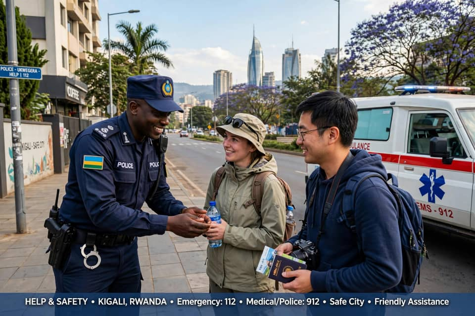
The following contacts are accessible in place of emergency 113 - Traffic Police 3511 - Police Conduct Complaint / GBV hotline 912 - SAMU Ambulance (Main) 114 - Ambulance Alternative
We would love to hear from you. Whether you want to set up your City Concierge QR code or need a team to handle your guests 24/7, we are ready. We were your guests first. Now we help you keep yours.